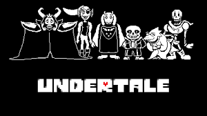

Mis videojuegos favoritos suelen ser tipo Sandbox o de simulación como Minecraft, Stardew
Valley y Animal Crossing, también me gusta escuchar sus bandas sonoras.
Estos son algunos de los juegos que he jugado últimamente:
Leyendas Pokémon: Arceus
Género: RPG
Desarrollador: Game Freak
Fecha de Lanzamiento: 2022
Plataformas: Nintendo Switch
Este juego es de la octava generación de la saga principal de Pokémon y se trata de una precuela de Pokemon Diamante y Perla que tiene lugar muchos años atrás.
Banda Sonora
Undertale

Género: RPG
Desarrollador: Toby Fox
Fecha de Lanzamiento: 2015
Plataformas: PC, PS5, Xbox Series, Nintendo Switch
Este juego trata sobre un niño que ha caido al subsuelo donde conoce a muchos personajes extraños e interesantes.